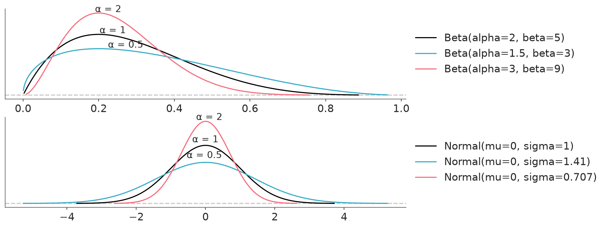
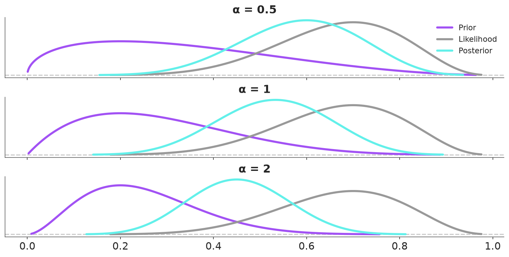

5 Prior and likelihood sensitivity checks
Determining the sensitivity of the posterior to perturbations of the prior is an important part of building Bayesian models. The traditional way to assess the prior sensitivity is to compare the posterior obtained using a reference prior against the posterior obtained using one or more alternative priors. The reference prior can be the default prior in packages like Bambi or some other “template” prior from literature or previous analysis of a similar dataset/problem. But it can also be the prior obtained after a more careful elicitation process. The “alternative” priors can be prior that for some reason we also consider relevant, or deviations from the reference prior that we consider important to evaluate.
To perform the comparison we can use visual and numerical summaries as we already explained in ?sec-ppc. For instance, when working with ArviZ, we can use plot_forest or plot_density functions to compare multiple posteriors (or actually their marginals) in the same plot. Ideally, we should summarize and report the results of this analysis, so that others can also understand how robust the model is to different prior choices.
The same procedure we use to assess the sensitivity of the prior can be used to compare how different likelihoods affect the posterior. So we can discuss the sensitivity of the posterior to the likelihood, the prior or both.
In summary, the traditional approach to assess prior and likelihood sensitivity is to fit multiple models with different priors and/or likelihoods, and then compare the results. This approach is simple to understand, and should be straightforward to implement. However, in practice thinking about alternative priors, building alternative models and fitting them can be very time-consuming. In the chapter we discuss a more automated way to do this kind of analysis.
5.1 Prior and likelihood sensitivity via power-scaling
The method we will discuss was presented by (kallioinen_2023?), and offers visual and numerical diagnostics that can alert us of potential prior-data conflict or likelihood noninformativity. What makes this approach very practical is that we only need to fit a single model once, and without explicitly modifying the prior or likelihood, we can assess the effect of changing them. If you are eager to see how this method can be applied in practice, you can jump to the example section. If you want to understand the method in more detail, keep reading.
5.1.1 Power-scaling
A key idea of the method is the concept of power-scaling. By power-scaling we mean raising a distribution to a power \(\alpha\). Why is this interesting? Because by power-scaling a distribution we can “stretch” it or “compress” it. Figure 5.1 shows the effect of power-scaling on a Beta and a Normal distribution. Power-scaling is a very general transformation that work for any distribution, except for the uniform distribution. Notice this restriction also applies to a Beta(1, 1), which is uniform. This is a minor restriction, because the uniform distribution is hardly a useful prior, unless we are dealing with a very special case.
In the context of Bayes Theorem we can use power-scaling to modulate the relative weights of the likelihood and prior. For instance we can write a power-scaled version of Bayes’ theorem as follows:
\[ p(\theta \mid y)_{\alpha} \propto p(y \mid \theta)^\alpha \; p(\theta) \]
Let’s take a moment to understand this expression. If we set \(\alpha=1\) we recover the usual expression for Bayes’ theorem, the one that you may have seen many times. Setting \(\alpha=0\) is equivalent to ignoring the likelihood, thus \(p(\theta \mid y)_{\alpha}\) will be equal to the prior. We can then conclude that any number between 0 and 1 will have the effect of “weakening” the likelihood with respect to the prior. By the same token any number greater than 1 will “strength” the likelihood with respect to the prior.
We can repeat this exercise for the prior and then we will be able to modulate the relative weights of the prior relative to the likelihood. Figure 5.2 shows the effect on the posterior of power-scaling the prior for a fixed likelihood. The prior is a Beta distribution with parameters \(a=2\) and \(b=5\) and the likelihood is a Binomial distribution with parameters \(n=10\) and \(p=0.7\). The posterior is computed using the prior and likelihood.

5.1.2 Power-scaling and importance sampling
We can analytically compute the effect of power scaling a distribution. For instance, for a Normal distribution, \(\mathcal{N}(\theta \mid \mu, \sigma)\) and power-scaling factor \(\alpha\) we get \(\mathcal{N}(\theta \mid \mu, \sigma \; \alpha^{-1/2})\). In practice we usually work with MCMC samples and arbitrary distributions, thus a more convenient way to perform power-scaling is to use importance sampling. As discussed in ?sec-model-comparison importance sampling is a method to estimate the expected value of a function under a distribution different from the one we have samples from. (kallioinen_2023?) proposed to use Pareto smoothed importance sampling (PSIS), a method we also discussed in ?sec-model-comparison to estimate the ELPD.
In the context of power-scaling perturbations, the proposal distribution is the posterior we computed using MCMC (\(p(\theta \mid y)\)) and the target distribution is the perturbed posterior (\(p(\theta \mid y)_{\alpha}\)). If the proposal and target distributions are expressed as the products of the prior \(p(\theta)\) and likelihood \(p(y \mid \theta)\), with the prior raised to the power of \(\alpha\), then we can write the importance weights for the prior as:
\[ w_{\alpha} = \frac{p(\theta)^{\alpha} \; p(y \mid \theta)}{p(\theta) \;\; p(y \mid \theta)} \]
Which simplifies to:
\[ w_{\alpha} = \frac{p(\theta)^{\alpha}}{p(\theta)} \]
which is the same as:
\[ w_{\alpha} = p(\theta)^{\alpha-1} \]
This resulta means that the importance sampling weights for the prior only depend on the density of the prior being power-scaled. This simplifies the computation of the weights. By the same logic the same applies to the likelihood.
To summarize, the method proposed by (kallioinen_2023?) combines two key ideas, importance sampling and power-scaling. This combination allow us to approximate the sensitivity of the posterior to the prior and likelihood without the need to explicitly build and fit multiple models.
5.1.3 Diagnosing sensitivity
Once we have power-scaled the prior and likelihood we can visually inspect the effect of the perturbations, by plotting the marginal posterior distributions for the parameter of interest. KDEs, ECDFs and point-intervals allows easy comparison of several distributions. If the perturbations are small, the distributions should overlap. If the perturbations are large, the distributions will be separated.
We can also compute numerical values based on distances (or divergences) between the unperturbed and perturbed posteriors. In ?sec-model-comparison we discussed the use of the Kullback-Leibler divergence to compare how similar two distributions are. (kallioinen_2023?) instead suggest using the cumulative Jensen–Shannon divergence (CJS) (nguyen_2015?). This divergence has two good features, its symmetrised form is upper-bounded, which aids interpretation, and it can be computed from the ECDFs, which can be efficiently estimated from MCMC samples. Other methods requieres the estimation of the density of the distributions, which can be computationally expensive and sensible to the choice of the kernel and bandwidth.
The authors suggest a cut-off value of 0.05 for the CJS. For a standard Normal this value corresponds to the mean being shifted by more than \(\approx 0.3\) standard deviations, or the standard deviation differing by a factor greater than \(\approx 0.3\). This value is not set in stone, but it can be used as a reference to interpret the results of the sensitivity analysis.
If the value of CJS when power-scaling the prior and likelihood is larger than the threshold, we have a potential prior-data conflict. If the value of CJS is larger than the threshold but the value for the likelihood is smaller than the threshold, we potentially have a strong prior and weak likelihood.
In the next sections we are going to show two examples of on how to use this method in practice.
5.2 Body fat example
Let’s see an example of prior-data conflict in a linear regression model. We will use the bodyfat data set (johnson_1996?). The aim of the analysis is to predict an expensive and cumbersome water immersion measurement of body fat percentage (observed variable named siri) from a set of thirteen easier to measure characteristics, including age, height, weight, and circumferences of various body parts.
Let’s start by loading the data and creating a siri variable for the response and a body_fat variable for the predictors. We center the predictors.
We are going to start by assuming that a resonable prior for all coefficients is Normal(0, 1). With that in mind, we will fit the following linear regression model:
\[ \begin{aligned} \beta_0 &\sim t_3(0, 9.2) \\ \beta_k &\sim \mathcal{N}(0, 1) \\ \sigma &\sim t_{3}^{+}(9.2) \\ \mu &= β_0 + β X^T \\ \text{siri} &\sim \mathcal{N}(\mu, \sigma) \end{aligned} \]
For the prior (and likelihood) sensitivity method to work we need to ensure that the DataTree object includes the groups log-prior and log-likelihood.
with pm.Model(coords={"covariates": body_fat.columns}) as model_bf_00:
β_0 = pm.StudentT("β_0", nu=3, mu=0, sigma=9.2)
β = pm.Normal("β", 0, 1, dims="covariates")
σ = pm.HalfStudentT("σ", nu=3, sigma=9.2)
μ = pm.Deterministic("μ", β_0 + β @ body_fat.T)
y = pm.Normal("y", μ, σ, observed=siri)
dt_bf_00 = pm.sample(random_seed=SEED,
idata_kwargs={"log_likelihood": True, "log_prior": True})functions {
}
data {
int<lower=1> N; // total number of observations
vector[N] Y; // response variable
int<lower=1> K; // number of population-level effects
matrix[N, K] X; // population-level design matrix
int prior_only; // should the likelihood be ignored?
}
transformed data {
int Kc = K - 1;
matrix[N, Kc] Xc; // centered version of X without an intercept
vector[Kc] means_X; // column means of X before centering
for (i in 2:K) {
means_X[i - 1] = mean(X[, i]);
Xc[, i - 1] = X[, i] - means_X[i - 1];
}
}
parameters {
vector[Kc] b; // population-level effects
real Intercept; // temporary intercept for centered predictors
real<lower=0> sigma; // residual SD
}
transformed parameters {
real lprior = 0;
// priors including all constants
lprior += normal_lpdf(b | 0, 1);
lprior += student_t_lpdf(Intercept | 3, 19.2, 9.2);
lprior += student_t_lpdf(sigma | 3, 0, 9.2)
- 1 * student_t_lccdf(0 | 3, 0, 9.2);
}
model {
// likelihood including all constants
if (!prior_only) {
target += normal_id_glm_lpdf(Y | Xc, Intercept, b, sigma);
}
target += lprior;
}
generated quantities {
// actual population-level intercept
real b_Intercept = Intercept - dot_product(means_X, b);
vector[N] log_lik;
for (n in 1:N) log_lik[n] = normal_lpdf(Y[n] | Xc[n, ] * b + Intercept, sigma);
}We can now use the psense_summary function from ArviZ to perform a numerical sensitivity analysis. This function returns a four-column DataFrame. The first column is the name of the variables, the second is the value of CJS when power-scaling the prior, then the value of CJS when power-scaling the likelihood and the last one is a textual description of the results.
For the \(\beta\) coefficient wrist we can see that we may have prior-sensitivity (CJS>0.05) and likelihood-sensitivity (CJS>0.05). Thus, we may have a case of prior-data conflict for the wrist variable.
We can also evaluate the effect of power-scaling visually with the function plot_psense_dist. This function displays the posterior marginal for 3 values of \(\alpha\). By default 0.8 (red), 1 (black) and 1.25 (blue). plot_psense_dist allow as to choose different representations including KDEs and ECDFs. From Figure 5.3 we can see that the posterior is sensitive to both prior and likelihood power-scaling, and that it shifts right (towards zero) as the prior is strengthened, and left (away from zero) as the likelihood is strengthened.
We can also use the plot_psense_quantities function to display quantities of interest like the mean, median, standard deviation, etc. We can then evaluate how much the quantities of interest change when we perturb the prior and likelihood. To get a reference for the relative effect size of the perturbations the function also shows the ±2 Monte Carlo standard errors (MCSE) of the base posterior quantity. From Figure 5.4 we can see that power-scaling the prior and likelihood pulls the posterior mean in opposite directions. This suggests there might be a potential mismatch or conflict between the prior and the likelihood.
5.2.1 Adjusting the prior
As there is prior sensitivity arising from prior-data conflict, which is unexpected and unintentional as our priors were chosen to be weakly informative, we consider modifying the priors. On inspecting the raw data, we see that although the predictor variables are all measured on similar scales, the variances of the variables differ substantially. For example, the variance of wrist circumference is 0.83, while the variance of abdomen is 102.65. This leads to our chosen prior to be unintentionally informative for some of the regression coefficients, including wrist, while being weakly informative for others
Now, let try with a different prior. We will use empirically scaled to the data, \(βk \sim \mathcal{N}(0, 2.5 \frac{s_y}{s_{xk}})\), where \(s_y\) is the standard deviation of \(y\) and \(s_{xk}\) is the standard deviation of predictor variable \(xk\).
with pm.Model(coords={"covariates": body_fat.columns}) as model_bf_01:
β_0 = pm.StudentT("β_0", nu=3, mu=0, sigma=9.2)
β = pm.Normal("β", 0, 2.5 * siri.std() / body_fat.std(), dims="covariates")
σ = pm.HalfStudentT("σ", nu=3, sigma=9.2)
μ = pm.Deterministic("μ", β_0 + β @ body_fat.T)
y = pm.Normal("y", μ, σ, observed=siri)
dt_bf_01 = pm.sample(tune=1000,
draws=2000, random_seed=SEED,
idata_kwargs={"log_likelihood": True, "log_prior": True})
pm.sample_posterior_predictive(dt_bf_01, extend_inferencedata=True)Now we can perform the sensitivity analysis again. We can see that we managed to remove the warning!
We can see that after changing the prior, the posterior mean for wrist changes from -1.45 to -1.86, indicating that the base prior was indeed unintentionally informative and in conflict with the data, pulling the estimate towards zero.
As previously, we can also evaluate the effect of power-scaling visually with the function plot_psense_dist. From Figure 5.5 we can see a better overlap between the posterior distributions, compared to the original prior.
In terms or the mean for βwrist, we can see that there is no longer prior or likelihood sensitivity, indicating no prior-data conflict. For the standard deviation, likelihood sensitivity remains, indicating that the likelihood is informative.
Overall, the power-scaling sensitivity analysis on the adjusted prior shows that there is no longer prior sensitivity, and there is appropriate likelihood sensitivity.
5.3 Non-interpretable parameters and derived quantities
In many cases, instead of looking at the posterior distribution of the model parameters, we will be interested in derived quantities. Some examples of derived quantities include, predictive performance measures, such as the Bayesian R² or the joint log-likelihood. Another example are predictions evaluated at specific values of the predictors, like the median of one or more predictors.
Evaluating the sensitivity of derived quantities can be useful in at least two scenarios:
When the model parameters are not directly interpretable. For example, the coefficient for splines are not only not directly interpretable, they are not relevant per se, they are just an “intermediate step” to get a smooth and flexible function. The same applies to Gaussian processes (GPs), Bayesian additive regression trees (BART), polynomials, just to name a few. If the parameters are not directly interpretable, we can exclude them from these sensitivity checks, and instead focus on the derived quantities.
When we are interested in a quantity that is more relevant or easier to explain to our audience. Sometimes we don’t care about the parameters of a model, irrespective of whether they are interpretable or not. This could happen if we are focused on a quantity that is of interest or easier to interpret for our audience, like the R². This could also be the case when our focus is on predictions. If those cases, we may decide to focus on the sensitivity checks for the derived quantities and, if they are ok, ignore the ones for the model parameters, even if they are interpretable. If the checks for the derived quantities are not ok, we may need to go back and check the model parameters, in particular if they are interpretable.
5.3.1 Computing derived quantities
Let’s illustrate this with an example. We will use the same model we used in the previous section, but instead of looking at the posterior distribution of the parameters, we will focus on the following derived quantities:
- The Bayesian R².
- The joint log-likelihood. This is the sum of the log-likelihood over all observations.
We are going to start by computing predictions at new_data, as you may already know how to do this from other examples. To do that we need to create a new DataFrame with the values of the predictors we want to use for prediction. In this case, we will use the median, min, and max values of each covariate. For your particular use case, you may want to use different values, like quantiles of any other specific values of interest.
We can ask ArviZ, to compute the Bayesian R² for us, we need to specify which variables represent the posterior mean (or location parameter) and standard deviation (or variance).
To compute the joint log-likelihood we just sum the poin-twise log-likelihood evaluations along the observations. In other words we compute one log-likelihood value per MCMC step.
Once we have added the derived quantities we just need to call psense_summary (or the others psense_* functions) as usual:
We see no signs of data-conflict or likelihood noninformativity, we can visually check this as we did before, but given these values we should expect the distributions of the derived quantities to very similar across the different priors.
5.4 Bacteria treatment
Now we discuss and example of power-scaling sensitivity analysis for hierarchical models. The main motivation for this example is to show that for certain models we should selectively power-scaled the priors. To illustrate this, consider two forms of prior, a non-hierarchical prior with two independent parameters \(p(\theta)\) and \(p(\phi)\) and a hierarchical prior of the form \(p(\theta \mid \psi) p(\psi)\). In the first case, the appropriate power-scaling for the prior is \(p(\theta)^{\alpha} p(\phi)^{\alpha}\). This is what we did in the previous example. In the second case, for the hierarchical model, we only want to power-scale the top level prior, that is, \(p(\theta) p(\phi)^{\alpha}\).
For this example we are going to use the bacteria data set (venables_2002?).
Let’s start by fitting a hierarchical model. The model is as follows:
with pm.Model() as model_bt:
μ = pm.Normal('μ', mu=0, sigma=10)
β_week = pm.Normal('β_week', mu=0, sigma=10)
β_trtDrug = pm.Normal('β_trtDrug', mu=0, sigma=10)
β_trtDrugP = pm.Normal('β_trtDrugP', mu=0, sigma=10)
σ = pm.HalfNormal('σ', sigma=5)
b_Intercept = pm.Normal('b_Intercept', mu=0, sigma=σ, shape=K)
theta = μ + b_Intercept[bacteria.ID] + β_week * bacteria.week + β_trtDrug * bacteria.trtDrug + β_trtDrugP * bacteria.trtDrugP
y_obs = pm.Bernoulli('y_obs', logit_p=theta, observed=bacteria.y)
dt_bt = pm.sample()
pm.compute_log_prior(dt_bt, var_names=["μ", "β_week", "β_trtDrug", "β_trtDrugP", "σ"])
pm.compute_log_likelihood(dt_bt)#| eval: false
data {
int<lower=1> N; // number of observations
int y[N]; // response variable
int week[N]; // weeks
int trtDrug[N]; // treatment drug
int trtDrugP[N]; // treatment drug+
int<lower=1> K; // number of groups
int<lower=1> ID[N]; // group indicator
}
parameters {
vector[K] b_Intercept;
real<lower=0> sigma;
real mu;
real b_week;
real b_trtDrug;
real b_trtDrugP;
}
transformed parameters {
real theta[N];
real lprior;
lprior += normal_lpdf(sigma | 0, 5);
lprior += normal_lpdf(mu | 0, 10);
lprior += normal_lpdf(b_week | 0, 10);
lprior += normal_lpdf(b_trtDrug | 0, 10);
lprior += normal_lpdf(b_trtDrugP | 0, 10);
for (n in 1:N) {
theta[n] =
mu // population intercept
+ b_Intercept[ID[n]]
+ b_week * week[n]
+ b_trtDrug * trtDrug[n]
+ b_trtDrugP * trtDrugP[n];
}
}
model {
// prior
target += lprior;
// hierarchical component
target += normal_lpdf(b_Intercept | 0, sigma);
// likelihood
target += bernoulli_logit_lpmf(y | theta);
}
generated quantities {
vector[N] log_lik;
for (n in 1:N) log_lik[n] = bernoulli_logit_lpmf(y[n] | theta[n]);
}From the power-scaling sensitivity analysis perspective the key element in the previous code-block is that we are specifying the variables we want to use for the prior-powerscaling var_names=["μ", "β_week", "β_trtDrug", "β_trtDrugP", "σ"] i.e. we are omitting the b_Intercept variable. This is because we are only interested in power-scaling the top level prior. There are two way to specify the variables for power-scaling, the first is to use the var_names argument when computing the log_prior and/or log_likelihood, as we just did. The second is to use the prior_varnames and likelihood_varnames arguments in the psense-related functions.
Let’s compute sensitivity diagnostics for all variables except ~b_Intercept, if we want to check the sensitivity of all of them we can do it. The key point with hierarchical models is to not power-scale the lower level priors.
We see that everything looks fine. If you like to get potentials issues you could try running the model again with a prior like σ = pm.HalfNormal('σ', sigma=1).
5.5 Interpreting sensitivity diagnostics: Summary
As with other diagnostics we need to interpret the results of the sensitivity analysis in the context of the model, the data and the problem we are trying to solve. Context and modelling purpose should always be part of an analysis.
5.5.1 Diagnostic value
The sensitivity diagnostic value given by psense and psense_summary is based on a measure of how much the posterior would change if the prior or likelihood is changed. This value is provided for each marginal posterior specified in the var_name argument. In simple models with few parameters, it is reasonable to look at sensitivity for all the parameters. But as model complexity increases, and there are more parameters or strong posterior dependencies, it is better to focus on sensitivity of specific parameters with meaningful interpretations or on derived quantities of interest.
5.5.2 Diagnostic messages
Sensitivity diagnostic values are given for both prior and likelihood sensitivity. These values should be considered and interpreted together. Based on the values, a diagnosis is also given. Currently, this is either “strong prior / weak likelihood” (if the prior sensitivity is higher than a threshold and the likelihood sensitivity is lower than a threshold) or “prior-data conflict” (if both types of sensitivity are higher than the threshold).
These diagnostic messages do not necessarily indicate problems with the model. They are informative messages that describe the interplay between the chosen prior and likelihood. If your prior is meant to be informative, influence on the posterior is desired and prior-data conflict may not be an issue. However, if you did not put much effort into choosing the priors, these messages can let you know if you should be more deliberate in your prior specification.
- Strong prior / weak likelihood. This can occur when:
The prior is completely dominating the likelihood such that changing the likelihood strength has little to no impact on the posterior. The prior may be extremely informative and using a weaker prior may remove this domination.
The likelihood is uninformative and no information is gained by increasing the strength of the likelihood. The prior will always have an effect in this case.
- Prior-data conflict. This can occur when:
- The posterior is sensitive to changes to both the prior and the likelihood. This indicates that the prior and likelihood are both influencing the posterior and may be in conflict with one-another.
5.5.3 What to do with the diagnostics
Sensitivity analysis should be conducted with care, avoiding the repeated adjustment of priors solely to resolve discrepancies or diagnostic warnings. If a prior is modified to address a warning, the change must be justified based on domain expertise, data properties, or model assumptions. Conversely, choosing not to alter the model despite warnings can also be valid if there are compelling reasons to believe the model is sound. In such cases, it is essential to be transparent: report the diagnostic results and provide a clear rationale for disregarding the sensitivity diagnostics.